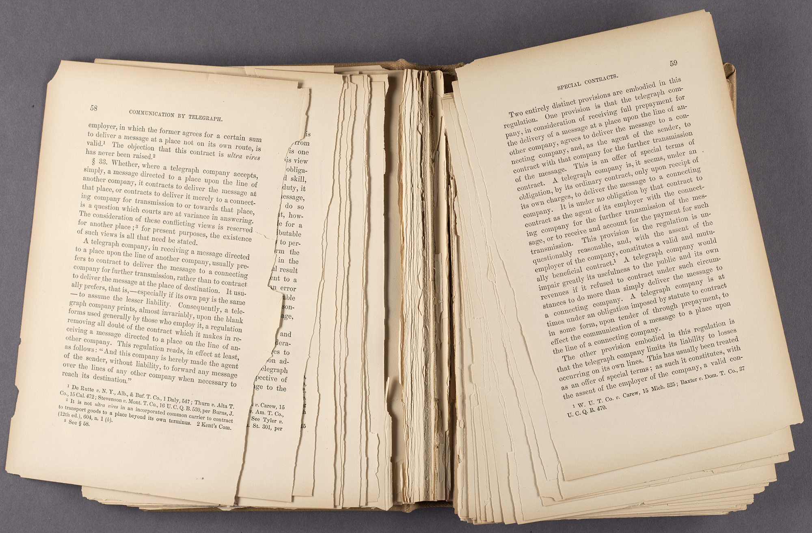

For more information on identifying and preserving inks, see Ink and Other Media.
Paper is typically a support that carries ink or other media. Paper is composed of cellulose fibers derived from plants. Paper quality depends largely on its fiber source and production method. In Europe, the practice of beating cotton or linen cloth rags into pulp and then using screens to form sheets began in the fourteenth century. The term for this product is "rag paper," and it is often found in good condition due to the neutral pH content of cotton and linen fibers. Flax and hemp fibers were also commonly incorporated. Wood pulp was not used until the mid-nineteenth century, and early wood pulp papers required the use of harsh chemicals to process wood into usable pulp. Additionally, many types of wood contain lignin, a protein which generates acid as it deteriorates and which causes yellowing and embrittling as the lignin reacts to light and heat exposure. Due to lignin-content, wood pulp papers—especially those produced from about 1850 to 1950—are typically found in poor condition.
In addition to raw materials, processing chemicals (e.g. additives, solvents) will produce certain qualities that affect the appearance and stability of the final product.
Paper fibers visible on close inspection. Image by PhotoGraham, available under a Creative Commons Attribution-NonCommercial-ShareAlike license (CC BY-NC-SA 2.0).
Fiber structure visible under magnification. Image by Jan Homann, available under the public domain.
Fibers
Prior to the nineteenth century, rag paper was the base for paper made in Europe and North America. It was made using either linen or cotton fibers with natural materials like hemp or flax potentially added to the pulp. Modern rag paper is most commonly made out of cotton, although synthetic materials are occasionally used in combination. Fine art rag paper is composed of long cotton rag fibers and cotton linters, which are short cellulose fibers that are produced when cotton is processed.
Unlike other types of paper fibers, wood pulp naturally contains lignin, an acidic substance that causes paper to discolor, embrittle, and deteriorate rapidly when exposed to heat and light. During the milling process, lignin can be removed from pulp using chemical solvents. Low-quality paper like newsprint or groundwood is often produced without lignin removal and is therefore acidic and prone to rapid deterioration.
Coatings
Coatings are applied to create a smooth, bright surface, and they often can provide a glossy finish. Coated papers provide an optimal surface for mechanical printing processes. The substances used in paper coatings vary widely and include minerals, synthetic materials, and plastics (e.g. resin-coated papers). Some coatings age poorly, becoming yellow and brittle. Clay is a common coating and filler substance; it is also very sensitive to water and high humidity.
Sizing
Sizing is meant to strengthen paper and to prevent inks from bleeding into the fibers, ultimately yielding crisper print quality. It can be internal (e.g. alum-rosin) or applied as a coating (e.g. gelatin). Use of alum-rosin to strengthen paper began in the 1830s. Over time, however, the acidic nature of alum-rosin led to darkening and embrittlement of paper. Much of the paper from the later nineteenth century and early twentieth century exhibits these symptoms due to the period's overuse of alum-rosin as well as acidic wood pulp. The Library of Congress suggests that any wood pulp paper from before the 1980s be suspected of alum-rosin acidity.
Other Additives
Additional additives include fillers, optical brighteners, and tinting agents. Filler substances can be added to create a smooth, shiny paper surface. Overfilled paper may be particularly susceptible to tears and damage from folding. Beginning in the 1950s, calcium carbonate was added as a filler to create an alkaline buffer in many papers. Coloring agents and optical brightening agents added to papers (whether internally or as a coating) may not be lightfast. These additives may cause fading, yellowing, or embrittlement.
Paper Types
Rag Paper
Laid rag paper with watermark and foxing. Image by Erin Blake, available under a Creative Commons Attribution-NonCommercial license (CC BY-NC 4.0).
Wove rag paper with watermark. Image by Erin Blake, available under a Creative Commons Attribution-NonCommercial license (CC BY-NC 4.0).
Description
There is a great variety of historic and modern rag papers, but the earliest date from the 11th to 14th Centuries in Europe and modern rag papers are still produced today on a limited basis. Rag was predominantly the only form of paper used in Europe and the Americas, however, until the invention of wood pulp papers in 1843 and the successful mechanization of their production by the Fourdrinier papermaking machine, which quickly replaced rag paper as the popular paper type in only a few decades.
Rag papers are made from cotton, linen, flax, or hemp fibers and were made in papermaking mills from discarded textiles – hence “rags” – as a source of fibers. Rag paper can be laid or wove in its manufacture, though laid is far more common. With laid paper, an impression of the hand papermaking screen is left on the paper revealing laid and chain lines in transmitted light. Rag papers also often display water marks as insignia of their papermaker from which they were created.
Although there can be great variability in the appearance and working properties of rag paper, in general it is a strong, flexible paper with a pronounced surface texture. This surface texture can be diminished, however, with the application of surface coating such as gelatin size. Rag papers range in color from cream or off white to bluish, which is a result of the addition of minerals or plant extracts such as smalt or woad to counteract the natural tendency of such fibers as linen and hemp to turn yellow.
Deterioration
Rag paper is known for its chemical and mechanical stability. Due to the nature of the pure cellulose plant fibers which are long and strong, rag paper is exceptionally durable. Rag paper is susceptible to external forces, such as acid migration from adjacent materials, acidic deterioration due to high environmental pollutants, or exception heat or damp, which can lead to discoloration and embrittlement. However in most cases rag paper, even dating back as far as the 1500’s, is strong, light in color and flexible.
Risk Level
Low. Rag paper lasts hundreds of years under normal use.
Acid-Free and Permanent Papers
Symbol for permanent paper. Image uploaded by Wikimedia Commons user GAllegre, available in the public domain.
Description
Taken at face value, "acid-free" is the paper industry’s designation for any paper produced with a neutral pH (7) or alkaline pH (>7) that contains no acidic pulp, lignin, or sulphur. Acid-free paper can be made out of cotton rag or out of wood pulp. If it is made out of wood pulp, then it will most often also be alkaline-buffered. Paper's acid-free status is determined at the time of manufacture and is not a guarantee of stability over time.
There are two main additional distinctions and standard-specific terms among acid-free papers:
Archival paper is a statement of quality that indicates the paper meets either the U.S. (ANSI/NISO Z39.48) or a specific international standard (e.g. ISO 1108). Much like "acid-free," the term "archival" is often used in a loose and misleading manner by paper manufacturers. Archival-grade (or "museum-grade") acid-free paper is composed of cotton rag pulp. Conservation-grade acid-free paper, on the other hand, is wood pulp-based and buffered. Archival paper made out of rag pulp is generally more durable than permanent paper.
Permanent paper is a term for paper adhering to the U.S. standard (ANSI/NISO Z39.48) for coated and uncoated papers that are intended to last several hundred years under normal use. This paper designation includes standards for pH, tear resistance, alkaline reserve, and paper stock (e.g. lignin levels). A similar international standard for permanent paper, ISO 9706, was published in 1994. Although permanent paper is often referred to as "acid-free paper," not all acid-free papers necessarily meet the standards for permanent paper. Certain acid-free papers that meets ANSI or ISO standards may be labelled as "Permanent Paper" with the infinity symbol (∞ set within a circle) or printed with a statement of compliance (e.g. "meets the minimum requirements of the American National Standard for Information Sciences—Permanence of Paper for Printed Library Materials, ANSI/NISO Z39.48-1992"). The symbol is typically seen on permanent paper either as a watermark on a sheet of paper or as an identification mark on books that have been printed on permanent paper.
Deterioration
As acid-free paper is specifically manufactured to remove or greatly reduce inherent vice, it therefore avoids most symptoms of acidic content (i.e. darkening, yellowing, brittleness). However, "acid-free" does not necessarily mean that the material will maintain a stable pH. Light damage, paper staining, and mechanical damage can also affect any type of paper.
Risk Level
Low. Permanent paper is designed to last several hundred years under normal use; and, it is the preservation standard for American paper documents. Permanent paper should be used in the production of important documents and for preservation photocopies.
Coated Paper
Text made with coated paper. Note the pages stuck together (blocking) due to water exposure.
Description
Coated paper can be made from either plant fiber based or wood fiber based paper. The coatings used on paper vary by their intended use. Coating the paper serves a number of purposes. Paper coatings help cultivate a uniform surface, are better suited for print, and enhance the opacity, smoothness, and gloss of the paper surface. Coatings also have been used as a cost-saving measure in order to brighten and mitigate the rough features of low-grade and recycled pulps. The actual materials used in paper coatings vary widely; and, while some coatings impart extra strength and longevity to papers, others pose a significant preservation risk. Clay and calcium carbonate are common paper coating substances used in advertising, magazines, and books with color illustrations or photography.
Deterioration
Some coatings may contain acidic materials that cause yellowing and embrittlement. Coated papers are generally more sensitive to abrasion than uncoated papers, and they are very sensitive to water. If sheets of coated paper are exposed to water, they may "block" together if not separated quickly. This blocking cannot be reversed. A disaster recovery procedure in the event of water exposure should be established for coated papers of all kinds, especially clay-coated book paper.
Risk Level
Low to high. There is no "set" risk; it varies widely depending on the coating. If low quality machine pulp or waste pulp was used to create the paper, this will greatly impact the preservation risk regardless of the coating. Early resin-coated papers are of moderate-high risk.
Background
Although early papers were often coated with gelatin for surface sizing, the modern practice of coating paper for purposes beyond sizing did not begin until the 1850s in the United States. Initially made with natural coatings like wax and gelatin, today’s coated paper is more likely to be made using an amalgam of natural and synthetic substances (with resin being especially common).
Wood Pulp Papers and Newsprint
Newsprint. Image by Flickr user Ol.v!er [H2vPk] available under a Creative Commons Attribution-Non-Commercial-Share-Alike license (CC BY NC SA).
Brittle newsprint that is deteriorating and flaking. Image by the History, Philiosophy, and Newspaper Library at the University of Illinois Urbana-Champaign. Image courtesy of the University of Illinois Board of Trustees.
Description
Wood pulp paper is a soft, off-white paper primarily composed of ground wood pulp. It can range in quality from reasonably durable papers used in the production of mass-market paperbacks to more ephemeral papers used in newspapers. Newsprint, in particular, may be found to be lightly tinted pink, yellow, or blue for use in various newspaper publications. Wood pulp paper is frequently found in poor condition due to the groundwood's short fibers and inherent acidity. In general, ground wood pulp papers are used for the production of printed material that is not meant for long-term retention. Newsprint is most commonly found used for newspapers , but can also be found used for the production of other ephemeral items (e.g. flyers, newsletters). Other wood pulp papers are used for mass market paperbacks and other low-cost printed artifacts. These sorts of publications have historically been printed by relief (e.g. letterpress, flexographic) or offset (e.g. lithographic) processes. Text is typically printed in black ink, which is made of carbon black pigment. Four-color printing (CMYK) is also common today, producing "full-color" images generally of limited contrast and sharpness.
Deterioration
When exposed to UV light and heat, ground wood pulp papers deteriorate rapidly, becoming yellow and brittle. Severely deteriorated wood pulp papers will flake and "shatter" when handled. Items on newsprint are often large-format and may have been stored folded. If folded, the paper will fracture more easily along the path of the folds. Newsprint may also develop tears from poor handling.
Risk Level
High. Due to the highly acidic nature of most wood pulp papers, reformatting is the recommended option for long-term preservation.
Background
Ground wood pulp papers came into wide use in the mid-1860s, when American paper manufacturers adopted wood fiber processing. Prior to this, ephemeral publications, including newspapers, were printed on a variety of papers made using straw, hemp, or cotton fibers. Mechanical production of wood-based paper helped manufacturers to meet increasing demands for daily newspapers and affordable book production. This fast and cheap pulping process did not involve the removal of lignin, the substance which causes these papers to yellow and brittle through oxidation. It can be assumed that any newspaper and many other ephemeral publications after the mid-nineteenth century will be on this volatile paper type. While current newsprint is increasingly produced with recycled fibers, it should still be assumed to be unstable.
Storage
Due to residual acids in ground wood pulp paper, it will inevitably deteriorate and become unusable. A proper storage environment will slow deterioration but will not stop it completely.
About Reformatting
For small clippings that are retained for informational purposes, the easiest course of action is to make a preservation photocopy on permanent paper. Large newspaper collections have historically been microfilmed, beginning in the 1950s. Microfilming remains an option for preserving newspapers to the present day. Many institutions with the available infrastructure now choose to digitize their newspaper holdings as an alternative preservation strategy.
The federal government has two major projects dealing with the digitization of newprint. The Library of Congress' National Digital Newspaper program provides information and guidelines about newspaper digitization to the public, while the United States Newspaper Program (USNP) provides Preservation Microfilming Guidelines for use by anyone interested in a wider range of preservation and conservation practices.
Proprietary Paper
Several types of carbonless copy paper. Image courtesy of Ian Batterham.
Two types of dual spectrum copy paper. Image courtesy of Ian Batterham.
Blue flame logo on dual spectrum copy paper. Logos and brand names are often found on the sheet's verso (back).
Gevaert branding across diffusion transfer copy paper.
Description
Proprietary papers are those associated with a particular media-production process (e.g. specialized paper required to produce a Thermofax copy). They are manufactured with certain attributes so as to receive a particular type of media (e.g. text, photograph). Such papers contain a myriad of unknown combinations of substances and chemicals, which often adversely affect their preservation.
Specialized papers are used in the following processes, which are described elsewhere in the Collection ID Guide. This is not a comprehensive list, but it represents some of the more common types that are found in collections:
Proprietary papers often contain acidic chemicals and additives, which can cause accelerated yellowing, embrittlement, and/or image fading.
Risk Level
Many proprietary papers are high risk. If the document appears to be in poor condition or if it is excessively brittle and yellow, it should be photocopied before the information is permanently lost. Some volatile formats may also adversely impact other materials stored in proximity. These should therefore be stored separately from other materials if possible.
Tracing / Transparent Paper
Natural tracing paper.
Synthetic vellum tracing paper.
Bag made from glassine, a translucent paper often used for envelopes and wrappers.
Carbon copies made from onionskin paper.
Synonyms
"Genuine parchment paper"
Glassine
Description
The identification of tracing and transparent paper subtypes can be difficult, since many share the same physical traits (e.g. ivory color; thin, overbeaten fibers). Additionally, some of these papers can not only be fairly thick but they may also be used in ways that have nothing to do with tracing or transparent reading (e.g. certificates, ledgers). Categories for tracing/transparent papers, as defined here, include: natural tracing paper, prepared tracing paper, vegetable parchment paper, imitation parchment paper, and onionskin paper.
Natural tracing paper is the most prevalent of modern tracing/transparent papers. It is produced in a fashion similar to imitation parchment, in that chemical wood fibers are overbeaten to the point of even transparency across the sheet. The surface may be calendered and/or coated. On the whole, natural tracing paper is among the most translucent and has a matte surface.
Prepared tracing paper before the mid-nineteenth century was made translucent through the addition of oil, starch, or varnish--all of which often exhibit fluorescence. More contemporary methods to make tracing paper involve impregnating the paper with a resin or composite.
Synthetic vellum paper (1850s – present) is one such paper, which is made with plasticized cotton fibers or wood pulp. It has a smooth and even surface, is typically only semi-transparent through light, and is often used for drawings and reprographic copies of drawings. Synthetic vellum paper is well-suited for architectural plans and technical drawings because it is dimensionally stable and will not fluctuate with environmental changes (and thereby distort the image scale).
"Parchment paper" is a generic term for two classes of transparent paper sharing a similar appearance:
Vegetable parchment (1850s – 1950s) paper is made out of either rag-stock or chemical wood pulp. It is rendered semi-transparent through an acid treatment, followed by alkaline neutralization, and then calendering. Vegetable parchment is comparatively thick and firm. It may have a blotchy fiber lay pattern.
Imitation parchment (early 1900s – present) paper is composed of overbeaten chemical wood pulp that is then calendered to achieve a very smooth surface. While rare, it is possible to run across rag-based parchment used for legal documents and certificates. The surface of imitation parchment is often very glossy, such as in the case of glassine, and it may resist media. Wood pulp-based imitation parchment is often used for wrapping food like meat or cheese.
Onionskin paper is a lightweight, durable tissue that is characterized by its white or canary color, tactile crispness, and translucent onionskin appearance. Historically, onionskin is produced from cotton rag-stock, but it can be made from wood pulp. The surface texture may be glazed or unglazed with a cockled quality. Onionskin transparent paper has been used primarily in office typing duplication, such as with carbon copies. For more information, see Carbon Paper.
Deterioration
Thin tracing papers made up of short, overbeaten fibers (e.g. natural tracing paper, imitation parchment) or those treated with acid (e.g. vegetable parchment) tend to be more fragile. Early forms of prepared tracing papers may emit noticeable odors or transfer oils onto adjacent materials. Interleave these with unbuffered, acid-free sheets in order to prevent oils or resins from spreading. Quality onionskin and other rag-stock fiber papers are very durable and stable. On the whole, however, tracing papers (especially if brittle and/or discolored) must be handled with care.
Risk Level
Any of the tracing papers described above can either contain wood pulp, which would place them at medium-high risk, or rag-stock, which would therefore place them at low risk. Onionskin and semi-translucent legal document papers, which commonly use rag stock, are generally of lower risk. Basically, it's best to evaluate preservation risk item-by-item, based on signs of acidic paper decomposition like brittleness and/or discoloration. Considering the typically fragile and oversized nature of many tracing paper documents, particular care must be taken when handling them.
Background
Beginning in the mid-nineteenth century, tracing/transparent paper was widely and primarily used by engineers, architects, and designers to create copies of plans and drawings where accuracy was necessary. In the early twentieth century, tracing paper was used as an intermediary in creation of photochemical copying process (e.g. diazotypes). While artists have also used tracing paper, it is mostly among architectural collections that tracing papers will be found. Tracing/transparent paper continues to be used today.
General Preservation
Deterioration
Paper is sensitive to light, water exposure, high humidity, and high heat. Exposure to light and/or heat will accelerate deterioration in the form of yellowing and sometimes embrittlement. Acidic paper (pH below 7.0) commonly exhibits both deteriorative traits. Colored media on the paper support will fade rapidly. Water exposure can ultimately lead to desiccated or brittle paper, making it more easily torn or damaged through handling. Fluctuating temperature and RH may result in warping and cockling of the paper surface. High humidity (higher than 68% RH) promotes mold growth and insect infestation, both of which can cause permanent damage.

Brittle paper with fractured pages.
Paper discoloration. Note the extent of yellowing along the paper edges.
Visible mold damage. Image courtesy of Joanna P. McMann.
Visible mold damage on map. Image courtesy of Joanna P. McMann.
Even pH neutral papers will become increasingly acidic over time. This is due to the fact that cellulose naturally generates acids as it ages. Papers, including book leaves, that are darker and more brittle along their edges than center demonstrate an absorption of acid-producing airborne pollutants.
Soil and dust may become ground into paper fibers, permanently soiling or staining the paper surface. Foxing is a common form of paper deterioration, which manifests as reddish-brown spots or blotches that appear embedded in the paper surface. Foxing is caused by a number of factors, but it is commonly spurred along by high humidity.
Foxing.
Foxing.
Risk Level
Light damage to paper materials is irreversible and cumulative. Pay close attention and monitor their tone. Never exhibit originals longer than 6 months cumulatively. Any paper pH measuring below 6.5 should be considered dangerously acidic. Media type and component materials also factor into the complete assessment. For example, color ink typically heightens risk, while black ink typically is a non-issue. For more information on inks, see Ink and Other Media.
Storage
Document-sized paper should be stored in archival folders, boxes, or files. Oversize items are best stored flat in a flat file drawer, keeping with items separate or with like materials of similar dimensions (interleaved with acid-free sheets) in specially tailored folders cut from acid-free, buffered paper. If flat storage is not possible, flexible, sturdy paper items may be stored rolled around a tube. Paper items should not be folded, as folding creates areas of weakness in the paper that make it prone to tearing.
Storage Environment
Cool storage (below 50 degrees) is recommended, and colder is generally better. Allowable Fluctuation: ±5°F; ±5% RH
Ideal
Temp.
35–65°F (2–18°C)
RH
35–50% RH
Based on ISO 18920
Related Notes
Oversize Materials
"Oversize" can be thought of as a designation for items that do not easily fit into the common folder, archival box, or container without being rolled or folded. For more on the storage of oversize formats, see the NEDCC's Storage Solutions For Oversized Paper Artifacts. To minimize risk when handling oversize materials, place a thick support (e.g. heavyweight folder or corrugated paper board) under the item as a rigid support when it is being moved about. You can also minimize risk by having someone assist you when transporting or handling oversize materials.
Resources
American National Standards Institute (ANSI). (1988). American National Standard for Imaging Media-Photographic Processed Films, Plates, and Papers-Filing Enclosures and Storage Containers. No. ANSI IT9.2-1988. Retrieved from: https://law.resource.org/pub/us/cfr/ibr/001/aimm.it9.2.1998.pdf
Barrett, Tim. (2012). Paper Through Time: Nondestructive Analysis of 14th- through 19th-Century Papers. The University of Iowa. Retrieved from: http://paper.lib.uiowa.edu/european.php
Lowengard, Sarah. (2006). The Creation of Color in Eighteenth-Century Europe. Columbia University Press. Retrieved from http://www.gutenberg-e.org/lowengard/
Ritzenthaler, M. L. (1983). Archives & manuscripts: Conservation, a manual on physical care and management. Chicago, IL: Society of American Archivists (SAA Basic Manual Series). [ISO 18920]